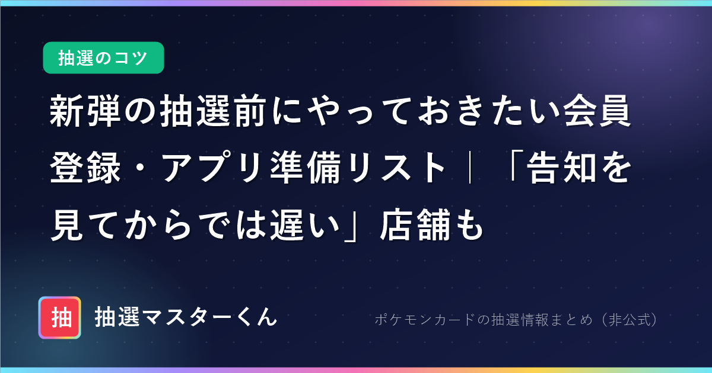

新弾の抽選前にやっておきたい会員登録・アプリ準備リスト｜「告知を見てからでは遅い」店舗も

ポケカの抽選は、受付が始まってから準備を始めても間に合わないことがあります。2026年11月に実際にあった抽選の条件をもとに、新弾の発表前にやっておきたいことをまとめます。
告知を見てからでは間に合わなかった条件の例
| 会員登録の期限 | TCGショップ193：10月31日までに店頭で会員登録した人が対象（抽選の受付は11月13日から） |
|---|---|
| 購入実績 | コジマ：2025年11月1日〜2026年11月20日のコジマでの購入が累計5,000円以上 |
| 購入実績 | セブンネットショッピング：2025年11月1日〜2026年11月16日に商品を注文・受け取り済み |
| メルマガ登録 | Joshin：11月3日時点で対象の会員ランクで、メールマガジンを受け取る設定にしている人 |
| 応募チケット | しまむら：アプリの応募チケットが5枚必要 |
共通するのは、「普段からその店を使っている人」が有利になっていることです。転売目的の応募を減らすための仕組みなので、今後も増えていくと考えられます。
やっておきたい準備リスト
- よく行く店舗・よく使う通販の会員登録を済ませる
- 公式アプリを入れて、ログインできる状態にしておく
- メールマガジンの受け取りをオンにしておく（抽選の案内がメールで届く店舗もあります）
- 普段の買い物をよく行く店にまとめる：購入実績の条件を満たしやすくなります
- 登録情報（住所・名前・電話番号）を最新にしておく：当選後に配送先を変えられないことがあります
- ポケモンセンターオンラインの登録と、必要なら本人確認を済ませる（詳しくはこちら）
やりすぎに注意
- 同じ人が複数のアカウントを作るのは、ほとんどの店舗で禁止されています。すべての応募が無効になることもあります
- 抽選のためだけに不要な買い物を増やすのは本末転倒です。普段使う店で、無理のない範囲で準備しましょう
応募方法ごとの特徴はポケカ抽選の応募方法は5種類で紹介しています。
当サイトは非公式のファンサイトです。価格・日程などは記事公開時点の情報なので、最新の情報は公式サイトや各販売店でご確認ください。